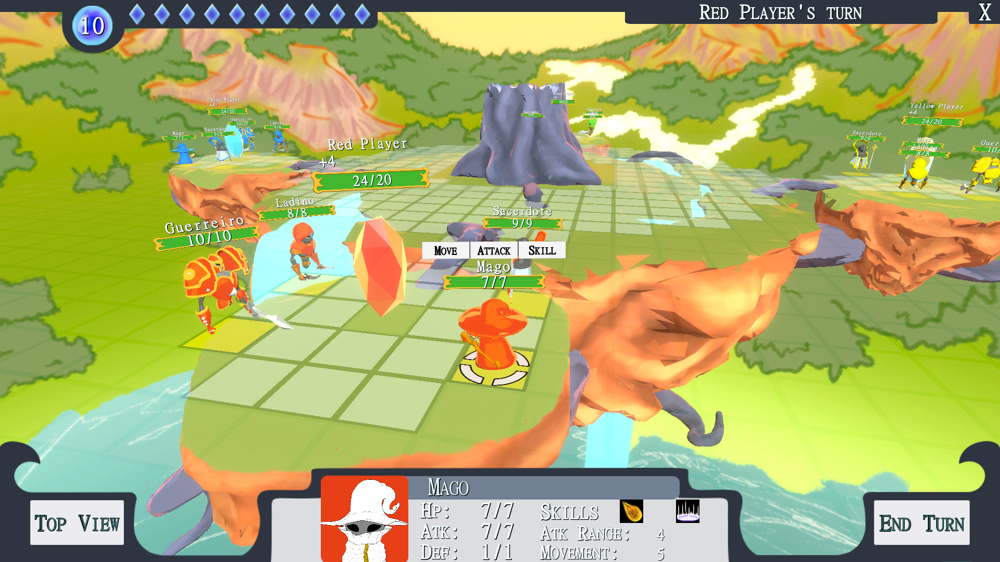

Meroth
3D Turn-based Tactic Strategy Game

Meroth is a 3D Turn-based Tactic Strategy Game and played by four players in a local device. The game is placed in a fantasy world created by the
magical elderly tree called Meroth.
This project was made with the purpose of completing the Digital Games' graduation course at UNIFACISA University. In the final project, the students must
develop an entire game by themselves, including doing all the art, designing and coding, while documenting everything in a GDD(Game Design Document).
Gameplay
Meroth is a tactical strategy game with a grid-based platform for the characters navegation, like most of games of the genre.In the player's turn, they can select a character and make all the desired actions while they still have mana points. The main objective of the game is to defeat the enemies' crystals, located at their bases, and collect the fragments. The player who collects the fragments of the three enemies first wins the match.
The game includes three main actions: Move, Attack, and use Special Skill. Each character has different attributes that impact the effectiveness of these actions, such as movement distance, attack range, and HP. Additionally, each character possesses unique skills. There are two skill types available in the game: active skills, which can be used by the player at will and cost some mana points, and passive skills, which activate automatically when certain conditions are met.
The game's navigation is very straightforward, requiring only the use of a mouse for mechanics like character selection and camera movement.
The levels in Meroth are designed on a 35x35 grid-based map, where the tiles fall into three categories: Selectable, Non-Selectable, and Spawnable. The battlefield is constructed with a circular central area and four bases located at each extreme, joined by narrow paths. Each character spawns at their base, with their team's crystal placed in the center.

The Lore
Once upon a time, there was an ancient tree called Meroth that had a magical crystal heart inside. One day, Meroth decided to create a new world with beautiful landscapes and peaceful creatures living in harmony. However, Meroth underestimated the consequences that would come with its action. Overwhelmed, the heart shone brightly until it exploded.
The magical crystal inside Meroth had shattered into pieces, its leaves were burnt to dust, and a significant portion of its trunk was smashed and thrown in every direction.
It was left with only its base and strong roots.
Meroth used its remaining magic to stretch its limbs and reach the little pieces of stone of the broken magical crystal lying around it. In this way, it was able to access a weakened source of
magic, and it was still potent enough to restore some of its lost powers.

The stones must now increase their strength to the point where they can merge with the ancient tree and become whole again. To achieve this, each stone will utilize its magical powers to summon powerful creatures to the battleground, with the aim of gathering fragments from their adversaries and gaining greater amounts of energy.

Characters
The four characters in Meroth were modeled after the typical medieval class stereotypes often found in RPG games. However, each of them possesses distinctive traits and abilities that set them apart.